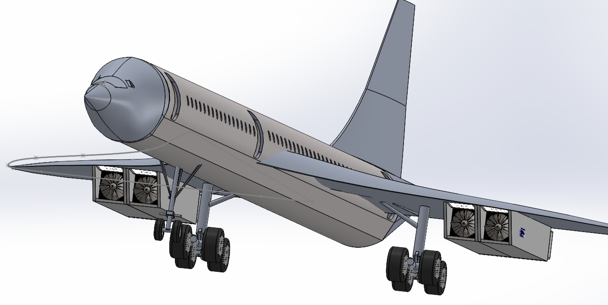
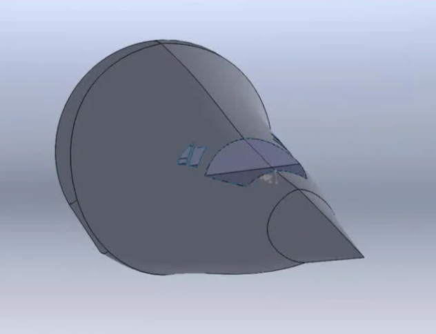

Concorde Modeling
Project Overview
For this project, we were asked to model an aircraft of our choice on Solidworks. Along with 4 other people, I modeled the Concorde, a hypersonic aircraft. I was in charge of modeling the fuselage. The other parts of the plane modeled by the other members of the group were then assembled to form the complete aircraft.
Fuselage Modeling
I used several plans of the Concorde fuselage on which I based the design of the fuselage. A profile plan and a rear plan allowed me to design this part of the Concorde to the scale set by the group and to make assembly possible with the remaining parts of the Concorde, in particular the body on which the fuselage was to be assembled and fixed.

Here is a visualization of the 3D fuselage model :
Assembly
I used several plans of the Concorde fuselage on which I based the design of the fuselage. A profile plan and a rear plan allowed me to design this part of the Concorde to the scale set by the group and to make assembly possible with the remaining parts of the Concorde, in particular the body on which the fuselage was to be assembled and fixed.